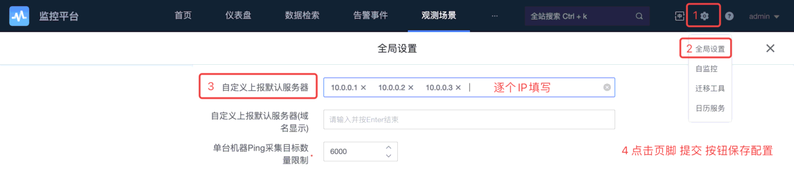

检查依赖¶
1. 蓝鲸版本¶
监控升级了 values 文件，并依赖新版本 apigw 平台。请确保蓝鲸版本为 7.1.2。
在中控机执行如下命令确认蓝鲸版本：
cd ~/bkce7.1-install/blueking/ # 进入工作目录
cat VERSION
2. GSE 版本¶
登录到 中控机，先检查 bk-gse 的版本：
helm list -A -l name=bk-gse
CHART 列里的版本号，预期大于等于 2.1.2-beta.20，如果版本较旧，请升级蓝鲸。
3. APIGateway 版本¶
登录到 中控机，先检查 bk-apigateway 的版本：
helm list -A -l name=bk-apigateway
CHART 列里的版本号，预期大于等于 1.11.3，如果版本较旧，请升级蓝鲸。
部署与访问¶
提示
如果部署期间出错，请先查阅 《问题案例》文档。
问题解决后，可重新执行
helmfile命令。
4. 监控平台¶
4.1. 启动监控存储服务¶
请在 中控机 执行：
cd ~/bkce7.1-install/blueking/ # 进入工作目录
helmfile -f monitor-storage.yaml.gotmpl sync # 部署监控依赖的存储
4.2. 对接容器管理平台¶
容器监控功能依赖 容器管理平台 （BCS），请先完成 部署容器管理平台 。
./scripts/config_monitor_bcs_token.sh # 获取bcs token，写入监控和日志的 custom-values 文件。
4.3. 部署监控¶
部署监控后台和 saas 以及监控数据链路组件：
helmfile -f 04-bkmonitor.yaml.gotmpl sync
约等待 5 ~ 10 分钟，期间 bk-monitor-consul pod 可能 Error 且自动重启。
4.4. 添加桌面图标¶
在 admin 桌面添加应用，也可以登录后自行添加。同时设置为默认应用，所有新登录的用户都会自动添加此应用到桌面。
# 监控
scripts/add_user_desktop_app.sh -u "admin" -a "bk_monitorv3"
scripts/set_desktop_default_app.sh -a "bk_monitorv3"
# 故障自愈
scripts/add_user_desktop_app.sh -u "admin" -a "bk_fta_solution"
scripts/set_desktop_default_app.sh -a "bk_fta_solution"
4.5. 容器监控数据上报¶
容器监控数据由 bkmonitor-operator release 采集，它提供了 daemonset 工作负载，在所有 k8s node （包括 master ）运行。数据上报由这些主机的 gse-agent 完成，故请先在 “节点管理” 中完成 agent 安装并确保状态正常。
helmfile -f 04-bkmonitor-operator.yaml.gotmpl sync # 部署 k8s operator 提供容器监控数据
4.6. 访问监控平台¶
需要配置域名 bkmonitor.$BK_DOMAIN，操作步骤已经并入 《部署步骤详解 —— 后台》 文档 的 “配置用户侧的 DNS” 章节。
配置成功后，即可在桌面打开 “监控平台” 应用了。
提示
刚部署完成时，访问监控如果出现 HTTP 503 报错，请耐心等待界面准备完成。在后台初始化任务完成前，首页可能出现报错。
主机基础监控数据上报由 bkmonitorbeat 插件提供，之前安装 agent 时会默认安装。
提示
- 为 Agent 安装并启动
bkmonitorbeat插件后，大概等 2 ~ 5 分钟， “观测场景” —— “主机监控” 界面的主机采集状态会变为 “正常”。此时点击 IP 进入主机详情界面，稍等 1 ~ 2 分钟可以看到监控图表。插件安装步骤见《配置节点管理及安装 Agent》文档。- 完成 “容器监控数据上报” 章节后，访问监控平台 “观测场景” —— “Kubernetes” 界面可能依旧显示 “开启 Kubernetes 监控” 的提示，请稍等 1 ~ 11 分钟，然后刷新页面，即可显示集群信息，稍后会更新监控数据图表。
提示
主机详情界面在刷新后，会导致图表数据自动刷新失效，需要重新设置一次。
5. 日志平台¶
5.1. 配置 ElasticSearch¶
提示
为了快速部署，我们默认使用了蓝鲸共享的
bk-elasticsearch单副本集群。 建议你自备多副本集群，并根据采集的原始日志量配置充足的存储。
目前由监控统一定时创建 ElasticSearch 索引，每 10 分钟执行一次。如果 es 自动创建了 write_ 开头的索引，则会导致搜索时找不到预期的索引，因此需要禁止此行为。
可以在 中控机 执行如下命令配置蓝鲸预置 es 服务：
kubectl exec -it -n blueking bk-elastic-elasticsearch-master-0 -- curl -X PUT -u elastic:blueking http://127.0.0.1:9200/_cluster/settings -H 'Content-Type: application/json' -d '{"persistent":{"action":{"auto_create_index":"-write_*,*"}}}'
提示
如果已经自动创建了 write_ 开头的索引，可以使用如下命令删除：
kubectl exec -it -n blueking bk-elastic-elasticsearch-master-0 -- curl -u elastic:blueking -X DELETE 'http://localhost:9200/write_*'
5.2. 对接容器管理平台¶
之前在部署监控时已经写过配置文件了。可以检查下：
cd ~/bkce7.1-install/blueking/ # 进入工作目录
yq e '.configs.bcsApiGatewayToken' environments/default/bklog-search-custom-values.yaml.gotmpl
null，请先 部署监控平台 并 启用容器监控。
5.3. 部署日志采集器¶
bklog-collector release 定义了 CR： bklogconfigs.bk.tencent.com，并提供了 daemonset 工作负载，在所有 k8s node （包括 master ）运行。日志上报经由这些主机的 gse-agent 传递，故请先在 “节点管理” 中完成 agent 安装并确保状态正常。
cd ~/bkce7.1-install/blueking/ # 进入工作目录
helmfile -f 04-bklog-collector.yaml.gotmpl sync
5.4. 部署日志平台¶
提示
请先确保 监控平台 正常运行，才能继续部署日志平台。
请在 中控机 执行：
cd ~/bkce7.1-install/blueking/ # 进入工作目录
helmfile -f 04-bklog-search.yaml.gotmpl sync # 部署
# 在admin桌面添加应用，也可以登录后自行添加。
scripts/add_user_desktop_app.sh -u "admin" -a "bk_log_search"
# 设为默认应用。
scripts/set_desktop_default_app.sh -a "bk_log_search"
5.5. 访问日志平台¶
需要配置域名 bklog.$BK_DOMAIN。
配置成功后，即可在桌面打开 “日志平台” 应用了。
此时位于 “检索” 界面，如果左上角 “索引集” 下拉列表为空。可以：
* 启用蓝鲸各平台预置的日志采集项
1. 完成下文的 “蓝鲸各平台容器日志上报” 章节。
* 采集主机日志
1. 在节点管理中，为待采集主机安装 bkunifylogbeat 插件。
2. 在日志平台的 “管理” —— “日志采集” 界面添加采集项。
* 采集容器环境日志 （需要完成 “对接容器管理平台” 章节）
* 蓝鲸集群（BCS-K8S-00000）
1. 完成 “部署容器日志采集器” 章节。
2. 在日志平台的 “管理” —— “日志采集” 界面添加采集项。
* 其他集群
1. TODO 其他集群容器日志采集步骤。
更多功能¶
6. 自定义上报服务器¶
在蓝鲸监控 “观测场景” 中，“综合拨测”、“APM” 及 “自定义场景”（数据采集、自定义事件、自定义指标）都需要通过 “自定义上报服务器” 来完成。
“自定义上报服务器” 如今由 bk-collector 担当。它是高性能的 Trace、指标、日志接收端，支持 OT、Jaeger 等多种数据协议格式。以 GSE Agent 插件的形式托管在节点管理中。
6.1. 安装 bk-collector¶
通过蓝鲸 “节点管理” 系统部署 bk-collector。
请通过蓝鲸桌面访问 “节点管理” 系统，在 “插件状态” 界面选择至少 1 台服务器。
然后点击 “安装/更新” 按钮，在弹框中选择 bk-collector 插件。连续点击 “下一步” 确认版本后，点击 “立即执行” 开始部署。
当插件安装成功后，我们得到了一批 自定义上报服务器。
6.2. 调整蓝鲸监控配置¶
让蓝鲸 “监控平台” 知晓我们部署的 自定义上报服务器 IP，以便推送配置信息。
请通过蓝鲸桌面访问 “监控平台” 系统，点击顶部导航右侧的齿轮图标，在弹出菜单中选择 “全局设置”。
在 “全局设置” 界面，找到配置项 “自定义上报默认服务器”，填写刚才部署的 OTel 服务端 IP。如果有多个 IP，需要逐个 IP 填写。填写完毕后点击页脚 “提交” 按钮保存配置。 
{kind=link}
6.3. 使用自定义上报服务器¶
bk-collector 在启动后，会监听如下的端口：
| 端口 | 协议 | 用途 |
|---|---|---|
| 4317 | GRPC | OTel 上报入口。 |
| 4318 | HTTP | OTel 上报入口，并同时提供 prometheus pushgateway。 |
| 10205 | HTTP | 蓝鲸监控自定义指标和事件上报入口，接替早期的 bkmonitorproxy。 |
功能使用位置：
* OTel 上报：“观测场景” —— “APM”。
* prometheus 上报： “集成” —— “自定义指标” —— 创建 上报协议 为 Prometheus 的自定义指标。
* 蓝鲸 自定义指标 上报： “集成” —— “自定义指标” —— 创建 上报协议 为 JSON 的自定义指标。
* 蓝鲸 自定义事件 上报： “集成” —— “自定义事件”。
* Jaeger 平台： 指定上报服务器为 OTel 上报入口（ 4317 或 4318 端口），我们会处理为 OTel 格式入库供蓝鲸检索。
6.4. 启动 OTel 服务¶
请完成前面的“自定义上报服务器”章节，即可获得 OTel 服务端。
采集蓝鲸各平台的数据¶
为了更好地让管理员了解蓝鲸集群的状况，我们预置了一些数据采集策略。需要手动开启： * 监控平台 * 蓝鲸服务 SLI 看板 * 【暂无】蓝鲸 SaaS 接入应用监控 * 日志平台 * 蓝鲸各平台容器日志上报
请阅读下方对应章节进行操作。
7. 蓝鲸服务 SLI 看板¶
我们预埋了 SLI Metrics 上报的逻辑，并提供了 “监控平台” 的 “仪表盘”，方便你了解蓝鲸各组件的服务状态。
提示
如果启用 SLI，会大幅提高
influxdb及elasticsearch的磁盘及内存开销。建议额外准备 300G 磁盘及 4GB 内存余量。同时磁盘 IO 压力大增，强烈建议使用 SSD 存储。
7.1. 检查 servicemonitor 资源¶
请先完成 “容器监控数据上报”，并确保 “观测场景” —— “Kubernetes” 界面有监控数据。
在 中控机 执行：
kubectl get servicemonitors.monitoring.coreos.com -A
预期看到 bkmonitor-operator 命名空间下的多个资源，如果为空，说明容器监控功能异常。
7.2. 配置指标上报¶
修改全局配置文件，启用 SLI Metrics 上报。
请在 中控机 执行：
cd ~/bkce7.1-install/blueking/ # 进入工作目录
# 启用指标上报：
case $(yq e '.serviceMonitor.enabled' environments/default/custom.yaml) in
null)
tee -a environments/default/custom.yaml <<< $'serviceMonitor:\n enabled: true'
;;
true)
echo "environments/default/custom.yaml 中配置了 .serviceMonitor.enabled=true, 无需修改."
;;
*)
echo "environments/default/custom.yaml 中配置了 .serviceMonitor.enabled 为其他值, 请手动修改值为 true."
;;
esac
7.3. 重启待上报指标的平台¶
为了实现指标上报，需要调整对应平台的 helm release。
请在 中控机 执行：
cd ~/bkce7.1-install/blueking/ # 进入工作目录
# 变更对应的release
helmfile -f base-blueking.yaml.gotmpl apply
helmfile -f 03-bcs.yaml.gotmpl apply
helmfile -f 04-bkmonitor.yaml.gotmpl apply
helmfile -f 04-bklog-search.yaml.gotmpl apply
如果看到如下报错，说明没有正确配置容器监控功能，请重新配置。
Error: unable to build kubernetes objects from release manifest: unable to recognize "": no matches for kind "ServiceMonitor" in version "monitoring.coreos.com/v1"
7.4. 关闭指标上报¶
如果启用 SLI Metrics 后，导致环境不稳定，可以关闭 SLI Metrics 上报。
先修改全局配置文件：environments/default/custom.yaml，将 .serviceMonitor.enabled 改为 false，或者将配置项删掉。
然后参考上面的 “重启待上报指标的平台” 章节变更各 release。待重启完毕即会停止上报。
7.5. 导入仪表盘¶
登录监控平台，并切换到“仪表盘”界面。
点击左侧导航栏的“批量导出和导入”菜单，点击“点击导入”按钮，进入导入界面。
请下载如下文件导入: * bk_monitor-dashboards-sli-20221008.tar.gz
导入成功后，无需配置监控目标，点击完成结束整个导入流程。
然后请回到“仪表盘”界面，找到并进入 “[BlueKing] 各产品看板入口” 仪表盘。您可以从这里快速访问蓝鲸各平台的仪表盘。
提示
您可以收藏此仪表盘。刷新页面后，即可在左侧导航栏看到。
7.6. 已知问题¶
目前部分 panel 加载时可能出现报错，请等待我们后续优化。
请求系统'unify-query'错误，返回消息: {"error":"expanding series: db: process, err:[get cluster failed]"}，请求URL: http://bk-monitor-unify-query-http:10205/query/ts
8. 蓝鲸各平台容器日志上报¶
提示
如果上报蓝鲸的执行日志，会： 1. 大幅提高
elasticsearch的磁盘及内存开销建议额外准备 300G 磁盘及 4GB 内存余量。同时磁盘 IO 压力大增，强烈建议使用 SSD 存储。 2. 会显著提升 监控平台transfer模块的 CPU 开销，请注意观察资源用量提升对应 pod 的resources.limits。
8.1. 前置检查¶
容器日志采集功能需要在所有 k8s node （包括 master ）部署 gse-agent。请先在 “节点管理” 中完成 agent 安装。
完成 “部署容器日志采集器” 章节后，可在 中控机 检查：
kubectl get crd bklogconfigs.bk.tencent.com
如果显示 Error from server (NotFound): customresourcedefinitions.apiextensions.k8s.io "bklogconfigs.bk.tencent.com" not found，请先确保采集器启动成功。
8.2. 启用日志上报¶
修改配置文件，全局启用日志上报功能。
请在 中控机 执行：
cd ~/bkce7.1-install/blueking/ # 进入工作目录
# 启用日志采集：
case $(yq e '.bkLogConfig.enabled' environments/default/custom.yaml) in
null)
tee -a environments/default/custom.yaml <<< $'bkLogConfig:\n enabled: true'
;;
true)
echo "environments/default/custom.yaml 中配置了 .bkLogConfig.enabled=true, 无需修改."
;;
*)
echo "environments/default/custom.yaml 中配置了 .bkLogConfig.enabled 为其他值, 请手动修改值为 true."
;;
esac
8.3. 重启日志平台¶
有 2 个用途：
1. 显示 “检索” -- “数据查询” 里的预置的蓝鲸各平台的日志采集索引。
2. 上报数据至上述索引里的 [采集项]bklogsearch。
cd ~/bkce7.1-install/blueking/ # 进入工作目录
# 先变更日志平台
helmfile -f 04-bklog-search.yaml.gotmpl apply
8.4. 重启其他平台¶
目前蓝鲸所有平台默认读取全局日志上报设置，如需覆盖，请自行新增或修改对应的 custom-values 文件。
为了实现采集项上报，需要重启一次采集项对应的 helm release。
请在 中控机 执行：
cd ~/bkce7.1-install/blueking/ # 进入工作目录
# 然后变更其他平台
helmfile -f base-blueking.yaml.gotmpl apply
helmfile -f 03-bcs.yaml.gotmpl apply
helmfile -f 04-bkmonitor.yaml.gotmpl apply
注：
1. 如需重启蓝鲸基础套餐的指定 helm release，请使用此命令： helmfile -f base-blueking.yaml.gotmpl -l name=release名字 sync。
2. bk-ci 的日志采集还在调试中，暂未预置采集项。
重启完毕后，大概等 10 分钟，回到“日志平台”——“检索”。展开“索引集”下拉框，即可看到采集项右侧的“无数据”标签消失，可以搜索日志了。
如果超过 20 分钟无数据，请步骤是否错漏，以及日志平台是否正常。TODO 排查指引
下一步¶
部署持续集成套餐。